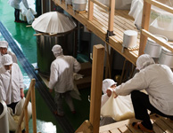
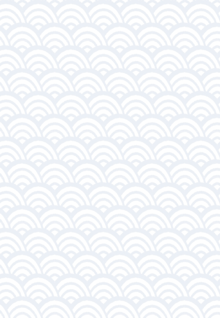
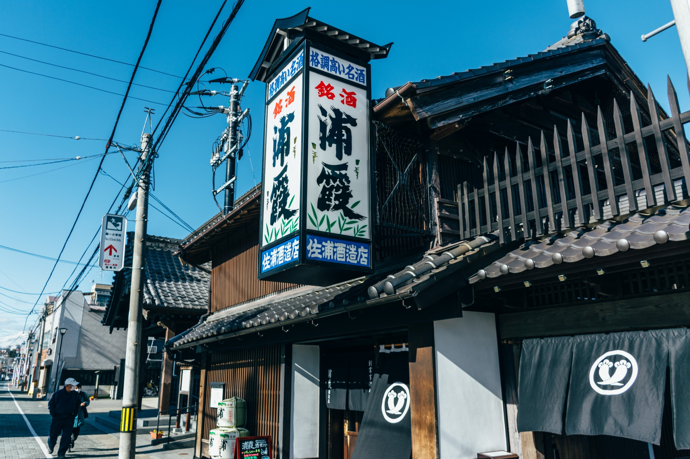
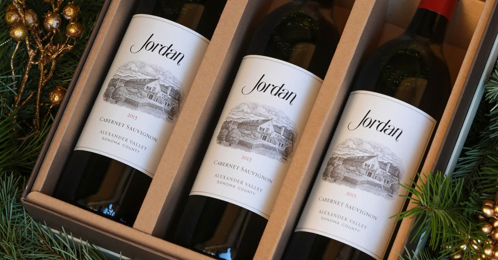
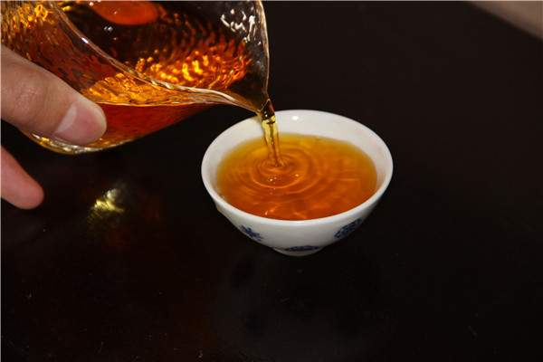
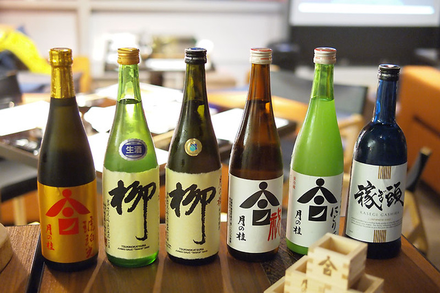

自1900年成立（明治33年）以來，
高橋清酒釀酒廠一直致力
於在位於熊本縣最南端的人吉和久馬地區
製作正宗的米燒酒。
生產的不僅是稻米燒酒，還包括有400多年曆史的熊馬燒酒。
熊麻燒酒與長崎的讚岐燒酒，鹿兒島的薩摩燒酒和沖繩的
琉球琉森燒酒相比，這是只有四個正宗燒酒的品牌。
最新消息
自1900年成立（明治33年）以來，高橋清酒釀酒廠一直致力於在位於熊本縣最南端的人吉和久馬地區製作正宗的米燒酒。
 自1900年成立（明治33年）以來，高橋清酒釀酒廠一直致力於在位於熊本縣最南端的人吉和久馬地區製作正宗的米燒酒。
自1900年成立（明治33年）以來，高橋清酒釀酒廠一直致力於在位於熊本縣最南端的人吉和久馬地區製作正宗的米燒酒。

自1900年成立（明治33年）以來，高橋清酒釀酒廠一直致力於在位於熊本縣最南端的人吉和久馬地區製作正宗的米燒酒。


酒造
知識
自1900年成立（明治33年）以來，高橋清酒釀酒廠一直致力於在位於熊本縣最南端的人吉和久馬地區製作正宗的米燒酒。生產的不僅是稻米燒酒，還包括有400多年曆史的熊馬燒酒。熊麻燒酒與長崎的讚岐燒酒，鹿兒島的薩摩燒酒和沖繩的琉球琉森燒酒相比，這是只有四個正宗燒酒的品牌。
怎麼喝

送禮
公司聚餐

獨飲
朋友聚會

新手推薦